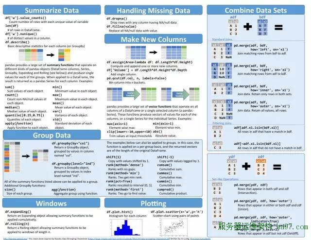

机器之心此前曾提供过机器学习和深度学习最好的九张代码速查表，不过近日又有博主发表了一次完全的速查表。虽然有一些和以前是重复的，但还是增加了一些新的速查表。本文前一部分主要重点描述新添加的速查表，后一部分再为读者提供一些以前的速查表资源。这些速查表暂时是保持英文的，因为后面一些不熟悉的库和函数我们可能编译不太精确。所以如果读者有较多需求，机器之心会考虑在 Github 中汉化这些概念和库函数速查表。文末提供了所有速查表的百度云下载地址。
首先第一张图描述了机器学习的主要分类和算法。虽然有几个表情没看懂，但我们发现这些表情还是挺有意思的。如下图所示，机器学习可分为监督学习、无监督学习和强化学习。接下来主要是回归方法、分类方法、聚类方法、降维方法和其他一些重要的特征。我们还可以看看具体算法的表情，随机森林是四棵不同的树我们能懂，但为什么支持向量机是一只独角兽？还有一些其实挺生动的，例如异常检测所用的表情就是三只熊猫夹一只狗熊。
算法选择
下面一张图展示了如何为我们工作和任务选择正确的 Scikit-learn 算法。其中每一个节点都是一个条件，然后按照要求和情况进行就可以找到管用的算法。比如说我们的数据量大于 50、需要预测类别、是标注数据、小于 100K 的数据、线性支持向量分类器不管用、不是文本数据、K 近邻分类器不管用，然后我们就只能选择最后的 SVC 集成分类器了。这种选择算法的速查表确实很管用，很适合我们没有什么机器学习开发经验的入门者使用，因为这会大大提高我们构建系统的效率。
机器之心以前也发过初学者如何选择合适的机器学习算法，该文章也有一张速查表，我们可以在以下展示。这一张速查表可以在特定任务下指导我们到底需要选择什么样的机器学习算法。例如我们的数据不需要降维、有标注、预测的是类别、更关注模型精度，那么就可以选择带核函数的支持向量机、随机森林、神经网络和梯度提升树算法。

如下图所示，我们还有这一张算法选择的速查表。该速查表可以帮助我们在微软 Azure 平台上找到合适的机器学习算法，它会首先根据我们已有数据的特点和类型进行分类，其次再根据实际情况给出合适的算法。例如我们的任务是预测一个类别、且该预测会存在多个类别而不仅仅只有两个，那么如果我们希望模型能快速训练且准确度也要高，那么我们就可以选择多类别决策森林。
算法概念
我们不仅需要了解如何构建机器学习模型，同时我们还需要理解构建机器学习的各种概念。如下所示，这两张速查表介绍了很多统计学、线性代数、最优化理论和机器学习理论上的概念，这些概念在模型构建和模型操作计算上有很重要的意义。比如前面就介绍了线性代数中的施密特正交化（Gram Schmidt Orthogonalization）概念，如下所述施密特正交化可以将 n 个线性无关向量转化为 n 个互相正交的向量，该速查表给出了转化公式。还有后面常用于最优化的梯度和海塞矩阵的求解方法，该速查表用一阶偏导数向量的形式表示了梯度的定义，二阶偏导数及其在矩阵中的位置表示了海塞矩阵的定义方式。这两个都是在最优化如梯度下降和牛顿法中核心的概念。当然机器学习的概念也少不了，比如前面的决策边界和后面的反向传播算法公式等。

TensorFlow
今年谷歌发布了第二代 TPU，同时它能在 Google Compute Engine 上进行使用。第二代 TPU 的性能达到每秒 180 万亿次浮点运算（180 teraflops），并且如果将 64 个 TPU 组织成一个计算集群，那么它的性能达到每秒 11.5 千万亿次浮点运算（11.5 petaflops）。如下图所示，该速查表不仅简要介绍了 TensorFlow、Skflow 和 Keras，同时还描述了如何安装和获得帮助的函数。该速查表还重点描述了 TensorFlow 的常用函数，如常见的梯度下降法、适应性梯度算法和 Adam 优化算法等优化器，常见的 ReLU、Sigmoid 和 tanh 等激活函数。

神经网络
下图相信不少读者已经挺熟悉了，该图使用不同颜色和符号代表不同的单元而描述了神经网络的各种架构。例如简单的长短期记忆神经网络就是几个黄色的输入单元组成输入层，再加上由若干个记忆单元组成的隐藏层和输出单元组成的输出层。
库函数语法速查表
1.Keras
Keras 是一个非常强大且容易上手的深度学习库；当 Keras 接入 Theano 和 TensorFlow 时，后两者可提供高水平的神经网络 API 以开发和评估深度学习模型。该速查表可用于 Python 数据科学和机器学习。
2. Numpy
Numpy 库是 Python 中科学性计算的核心库，它提供高性能、多维度的数组对象，以及对这些数组进行运算的工具。该速查表可用于 Python 数据科学和机器学习。
3. Pandas
这张 Pandas 速查表主要用于数据整理（data wrangling）。

Pandas 库构建在 NumPy 上，并为 Python 编程语言提供易于上手的数据结构和数据分析工具，该速查表可用于 Python 数据科学和机器学。
4. SciPy
SciPy 库是科学性计算的核心包之一，科学性计算可提供数学算法和构建在 Python 的 NumPy 扩展上的便捷函数 (Convenience Functions) ；该表中还包括线性代数的部分。该速查表可用于 Python 数据科学和机器学习。

5. Matplotlib
Matplotlib 是一个 Python 2D 绘图库，它在平台上以多种硬拷贝格式和交互环境生成发表品质的图。该速查表用于 Python 数据科学。
6. Scikit-learn
Scikit-learn 是一个开源 Python 库，通过统一接口实现一系列的机器学习、预处理、交叉验证和视觉化算法。该速查表可用于 Python 数据科学和机器学习。
7. ggplot2
ggplot2 基于图形语法，其思想是你可以利用相同的几个组件构建所有的图形：一个数据集、一个几何集（表征数据点的视觉化标记）和一个协作系统。该速查表用于数据可视化。
参考链接：
No comments yet.